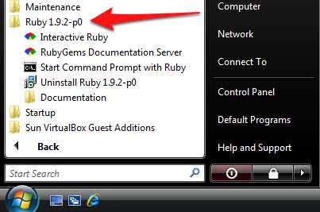

Introducción
En este documento encontraras toda la información necesaria para comenzar a trabajar con Ruby 1.9.2, Rails 3.1, y HAML 3.1.3.
Estudiantes
Los estudiantes que impartiran este curso son:
-
Alberto Alcaraz
-
Antonio Chávez
-
Jorge Robles
1. Ruby
1.1 Introducción a la programación con Ruby
a) Instalando Ruby
Ruby viene por defecto instalado en la mayoria de las versiones de los sistemas operativos basados en Linux y en el caso de Mac, viene instalado por defecto pero usualmente es una version mas antigua que la version estable mas reciente.
Instalando en windows:
Para instalar Ruby 1.9 en windows, puedes descargar el instalador de http://rubyinstaller.org/, despues de completar la instalacion podras acceder a la consola de comandos de Ruby en el acceso directo creado en el menu de INICIO:

Instalando en linux:
De acuerdo a la distribucion linux que utilizes, el comando para instalar paquetes desde los repositorios puede variar, en este caso nos concentraremos en la version ubuntu debian, pero tambien funciona en otras distribuciones.
-
Instalando RVM
El Ruby Version Manger, mejor conocido como RVM es un paquete que nos permite manejar las versiones de Ruby dentro de nuestro entorno Linux-Unix-Mac, Para instalarlo necesitamos introducir los siguientes comandos en la consola linux:
$ sudo apt-get update $ sudo apt-get install curl
Despues pasamos a instalar la version mas reciente de RVM
$ bash < <( curl http://rvm.beginrescueend.com/releases/rvm-install-head )
Para dar de alta el comando RVM en el shell de linux, debemos introducir el siguiente comando en el script .bashrc localizado en tu carpeta HOME del sistema:
$ gedit .bashrc
E introducimos el comando en la ultima linea del script:
[[ -s "$HOME/.rvm/scripts/rvm" ]] && source "$HOME/.rvm/scripts/rvm" # Load RVM into a shell session *as a function*
Una vez configurado el RVM pasamos a instalar la version 1.9.2 de Ruby con el siguiente comando:
$ rvm install 1.9.2
Automaticamente te reconocera el sistema operativo y si es de 32 o 64 bits, descargara y compilara la version 1.9.2 de Ruby, una vez terminado el proceso establecemos como default la version 1.9.2:
$ rvm --default 1.9.2
thenaox@thenaox-Satellite-L455:~$ ruby -v ruby 1.9.2p290 (2011-07-09 revision 32553) [x86_64-linux]
b) Historia de Ruby
Ruby es un lenguaje de programacion interpretado, reflexivo y orientado a objetos. Creado por el japones "Yukihiro Matsumoto", es un lenguaje de programacion orientado a objetos.
El lenguaje fue creado por Yukihiro "Matz" Matsumoto, quien empezó a trabajar en Ruby el 24 de febrero de 1993, y lo presentó al público en el año 1995. En el círculo de amigos de Matsumoto se le puso el nombre de "Ruby" (en español rubí) como broma aludiendo al lenguaje de programación "Perl" (perla).
El creador del lenguaje, Yukihiro "Matz" Matsumoto, ha dicho que Ruby está diseñado para la productividad y la diversión del desarrollador, siguiendo los principios de una buena interfaz de usuario. Sostiene que el diseño de sistemas necesita enfatizar las necesidades humanas más que las de la máquina:
A menudo la gente, especialmente los ingenieros en computación, se centran en las máquinas. Ellos piensan, "Haciendo esto, la máquina funcionará más rápido. Haciendo esto, la máquina funcionará de manera más eficiente. Haciendo esto…" Están centrados en las máquinas, pero en realidad necesitamos centrarnos en las personas, en cómo hacen programas o cómo manejan las aplicaciones en los ordenadores. Nosotros somos los jefes. Ellos son los esclavos.
c) Conceptos básicos
Viendo todo como un objeto
Inicialmente, Matz buscó en otros lenguajes para encontrar la sintaxis ideal. Recordando su búsqueda, dijo, “quería un lenguaje que fuera más poderoso que Perl, y más orientado a objetos que Python3”.
En Ruby, todo es un objeto. Se le puede asignar propiedades y acciones a toda información y código. La programación orientada a objetos llama a las propiedades variables de instancia y las acciones son conocidas como métodos. La orientación a objetos pura de Ruby se suele demostrar con un simple código que aplica una acción a un número.
5.times { print "Nos *encanta* Ruby -- ¡es fuera de serie!" }
En muchos lenguajes, los números y otros tipos primitivos no son objetos. Ruby sigue la influencia del lenguaje Smalltalk pudiendo poner métodos y variables de instancia a todos sus tipos de datos. Esto facilita el uso de Ruby, porque las reglas que se aplican a los objetos son aplicables a todo Ruby.
La flexibilidad de Ruby
Ruby es considerado un lenguaje flexible, ya que permite a sus usuarios alterarlo libremente. Las partes esenciales de Ruby pueden ser quitadas o redefinidas a placer. Se puede agregar funcionalidad a partes ya existentes. Ruby intenta no restringir al desarrollador.
Por ejemplo, la suma se realiza con el operador suma (+). Pero si prefieres usar la palabra sumar, puedes agregar un método llamado sumar a la clase Numeric que viene incorporada.
class Numeric
def sumar(x)
self.+(x)
end
end
y = 5.sumar 6 # ahora y vale 11
Los operadores de Ruby son simples conveniencias sintácticas para los métodos. Los puedes redefinir como y cuando quieras.
Más allá de lo básico
Ruby tiene un conjunto de otras funcionalidades entre las que se encuentran las siguientes:
-
Manejo de excepciones, como Java y Python, para facilitar el manejo de errores.
-
Un verdadero mark-and-sweep garbage collector para todos los objetos de Ruby. No es necesario mantener contadores de referencias en bibliotecas externas. Como dice Matz, “Esto es mejor para tu salud”.
-
Escribir extenciones en C para Ruby es más fácil que hacer lo mismo para Perl o Python, con una API muy elegante para utilizar Ruby desde C. Esto incluye llamadas para embeber Ruby en otros programas, y así usarlo como lenguaje de scripting. También está disponible una interfaz SWIG. puede cargar bibliotecas de extensión dinámicamente si lo permite el sistema operativo.
-
Tiene manejo de hilos (threading) independiente del sistema operativo. De esta forma, tienes soporte multi-hilo en todas las plataformas en las que corre Ruby, sin importar si el sistema operativo lo soporta o no, ¡incluso en MS-DOS!
-
Ruby es fácilmente portable: se desarrolla mayoritariamente en GNU/Linux, pero corre en varios tipos de UNIX, Mac OS X, Windows 95/98/Me/NT/2000/XP, DOS, BeOS, OS/2, etc.
1.2 Tipos estándar de datos
Ruby maneja los tipos estandar de datos de cualquier lenguaje de programacion, Numeros, Strings, y Rangos
a) Números
Ruby soporta enteros, flotantes, racionales y numeros complejos. Los enteros pueden ser de cualquier tamaño, tanto como tengas de memoria RAM disponible en tu computadora. Los enteros de un rango maximo de 2^ 62-1 en su forma binaria son objetos de la clase FIXNUM, y los enteros fuera de este rango son de la clase BIGNUM. Este proceso es transparente y Ruby automaticamente gestiona la conversion internamente:
ruby-1.9.2-p290 :001 > fxnum = 1111111 ruby-1.9.2-p290 :002 > fxnum.class => Fixnum ruby-1.9.2-p290 :003 > bgnum = 111111111111111111111111111111111111111111111111111111 ruby-1.9.2-p290 :004 > bgnum.class => Bignum
Un numero entero con un punto decimal, automaticamente ruby lo convierte a un objeto FLOAT correspondiente a la arquitectura nativa de los objetos del tipo DOUBLE.
ruby-1.9.2-p290 :001 > flnum = 1.25; ruby-1.9.2-p290 :002 > flnum.class => Float
Ruby no cuenta con una literal para representar los numeros racionales y complejos, pero puedes crearlos de forma que tu puedes trabajar con ellos:
ruby-1.9.2-p290 :003 > Rational(3,4)*Rational(3,4) => (9/16) ruby-1.9.2-p290 :004 > Complex(3,4)*Complex(3,4) => (-7+24i)
b) Strings
En ruby, las cadenas son secuencias de caracteres como en cualquier otro lenguaje de programacion, y se delimitan por la comilla doble ":
puts "Esta es una cadena de Ruby" Esta es una cadena de Ruby =>nil
Puedes insertar codigo dentro de una cadena como una suma, o una instruccion entera si quieres, pero necesitas como referencia la sintaxis #{}:
ruby-1.9.2-p290 :007 > puts "hoy es #{Time.now}"
hoy es 2011-11-13 18:48:23 -0600
=> nil
ruby-1.9.2-p290 :008 > puts "la suma de las 2 + 3 es #{2+3}"
la suma de las 2 + 3 es 5
=> nil
c) Rangos
Los rangos son tipos de datos que nos permiten determinar una secuencia de numeros, desde el 1 hasta el 9 o de enero a diciembre, de forma natural:
ruby-1.9.2-p290 :010 > rnum = 1..10 => 1..10 ruby-1.9.2-p290 :012 > rnum.to_a => [1, 2, 3, 4, 5, 6, 7, 8, 9, 10]
Los rangos tienen metodos que te permiten obtener lo que necesitas de ellos en distintas formas:
ruby-1.9.2-p290 :013 > digito = 1..9;
ruby-1.9.2-p290 :014 > digito.include?(5)
=> true
ruby-1.9.2-p290 :015 > digito.min
=> 1
ruby-1.9.2-p290 :016 > digito.max
=> 9
ruby-1.9.2-p290 :017 > digito.reject {|i| i < 5}
=> [5, 6, 7, 8, 9]
ruby-1.9.2-p290 :018 > digito.inject(:+)
=> 45
Puedes utilizar los rangos como condiciones dentro de un case o en un if:
while line = gets puts line if line =~ /start/ .. line =~ /end/ end
car_age = gets.to_f case car_age when 0...1 puts "Mmm... New car smell" when 1..3 puts "Nice car and new"
1.3 Estructuras de control
a) If, else
Una expresion IF en Ruby es bastante similar a cualquier otro lenguaje:
if today == "monday" then puts "I hate mondays, I'm garfield..." elsif today == "tuesday" then puts "I want some lasagna because today is not monday" else puts "Zzzz..." end
De otra forma tambien se puede expresar una condicion if utilizando unless:
if today == "Monday" then puts "I hate mondays, I'm garfield" end
unless today == "Monday" puts "I love weekdays" end
b) For, in
La sentencia for existe en ruby tal como:
numeros = 1..9 for i in numeros print i, " " end
E internamente Ruby la traduce de esta manera:
numeros.each do |i| print i, " " end
c) While
El ciclo while ejecuta el las instrucciones internas cero o mas veces mientras la condicion sea cierta. Por ejemplo:
while line = gets # ... end
El ciclo until es lo contrario, ejecuta las instrucciones hasta que la condicion cambie a verdadera:
until line = gets # ... end
Los ciclos while y until no integran el nuevo ambito de hacer iteraciones integrado en Ruby.
Las reglas de ambito para los bloques delimitados por los ciclos son diferentes, las variables definidas para trabajar dentro del ciclo no son accesibles despues de que la ejecucion iterativa del codigo halla sido terminada. Por ejemplo:
ruby-1.9.2-p290 :001 > [1,2,3].each do |x|
ruby-1.9.2-p290 :002 > y = x + 1
ruby-1.9.2-p290 :003?> end
=> [1, 2, 3]
ruby-1.9.2-p290 :004 > [x,y]
NameError: undefined local variable or method `x' for main:Object
from (irb):4
from /home/thenaox/.rvm/rubies/ruby-1.9.2-p290/bin/irb:16:in `<main>'
Este ciclo cambiaria si lo acomodamos de esta forma:
ruby-1.9.2-p290 :006 > x = "Valor inicial"; ruby-1.9.2-p290 :007 > y = "Otro valor"; ruby-1.9.2-p290 :008 > [1,2,3].each do |x| ruby-1.9.2-p290 :009 > y = x + 1 ruby-1.9.2-p290 :010?> end => [1, 2, 3] ruby-1.9.2-p290 :011 > [x,y] => ["Valor inicial", 4]
Y la variable "x" definida en el ciclo, no se ve afectada por lo que ocurre en su interior, como resultado obtenemos el valor de x inicial intacto, y la variable y modificada por las operaciones del ciclo.
d) Loop
Como ultimo, Ruby proporciona un iterador muy basico y simple llamado loop:
loop do #block end
El iterador loop es un ciclo que se ejecuta infinitamente hasta que tu como usuario del programa lo terminas manualmente.
server = TCPServer.open(2000) #Socket listen on port 2000
loop{ #Servers run forever
client = server.accept #Wait for a client to connect
client.puts(Time.now.ctime) #Send the time to the client
puts "Client connected at #{Time.now} from #{client.addr} , sending request ..."
client.puts "Closing the connection. Bye!"
client.close #Disconnect from the client
}
1.4 Clases y objetos
Todo lo que manipulamos con ruby es un objeto, y todo objeto fue generado directa o indirectamente desde una clase. Dentro de esta seccion nos concentraremos en crear clases y manipular los objetos en las distintas formas que tiene Ruby de hacerlo. Ruby es mas poderoso en orientacion a objetos que cualquier otro.
-
Creando nuestra primer clase en ruby
Vamos a definir la sintaxis de creacion de clases:
class NayaritCourse ## Some code in here end
Para la definicion de una clase es importante que la primer letra del nombre de la clase sea MAYUSCULA, y para las funciones de la clase sean en minuscula, por ejemplo:
class NayaritCourse
def initialize
# ...
end
def my_function
# ...
end
end
De la misma forma que en otros lenguajes de programacion orientada a objetos, Ruby tambien utiliza un constructor para inicializar los valores que nosotros necesitaremos a lo largo de la ejecucion de las funciones de cada objeto de nuestra clase definido.
class SteweyToy
#Constructor de la clase
def initialize(selection)
@selection = selection
end
end
Al momento de inicializar el constructor de la clase podemos pasarle parametros de inicializacion, en este caso selection es nuestra variable con la que nos comunicamos desde afuera del objeto hacia su interior, y la variable @selection es la variable que recibe el valor y que es accesible por cada uno de los metodos de la clase.
class SteweyToy
def initialize(selection)
@selection = selection
@Animal = {
:monkey => 'The monkey says "Makaaaaaak"',
:cow => 'The cow says "Shazoooooo!"',
:pig => 'The pig says "Oink!!"',
:rooster => 'The rooster says "Kikirikiiiii!!!!"'
}
end
def Jam
puts @Animal[@selection]
end
end
Las variables precedidas por un @ son variables accesibles por toda la clase.
a) Objetos y atributos
b) Clases y su comunicación con otras clases
c) Control de acceso
d) Variables
1.5 Bloques
a) Arrays
b) Hashes
c) Bloques
d) Contenedores
2 Rails
2.1 ¿Qué es Ruby on Rails?
a)
2.2 Preparandonos para empezar
a)
2.3 Conociendo el mundo de Rails
a)
2.4 Bases de datos, modelos y sus relaciones
a)
2.5 Una simple vista de Rails
a)
2.6 Como controlo lo que hace
a)
2.7 ¿Y tanto para esto?
a)
3 HAML, simplificando HTML y CSS
3.1 Introducción a HTML
a) Breve historia
b) Marcado de elementos y atributos
c) Nociones básicas
3.2 Código básico en HTML
3.3 CSS (Hojas de estilo)
a) Implementación dentro del código HTML
3.4 Creación de paginas web con HTML y CSS
Aqui va la documentación del 3.4
3.5 Introducción a HAML
a) Breve historia
b) Uso y aplicación
3.6 Programación con HAML
Aqui va la documentación del 3.6